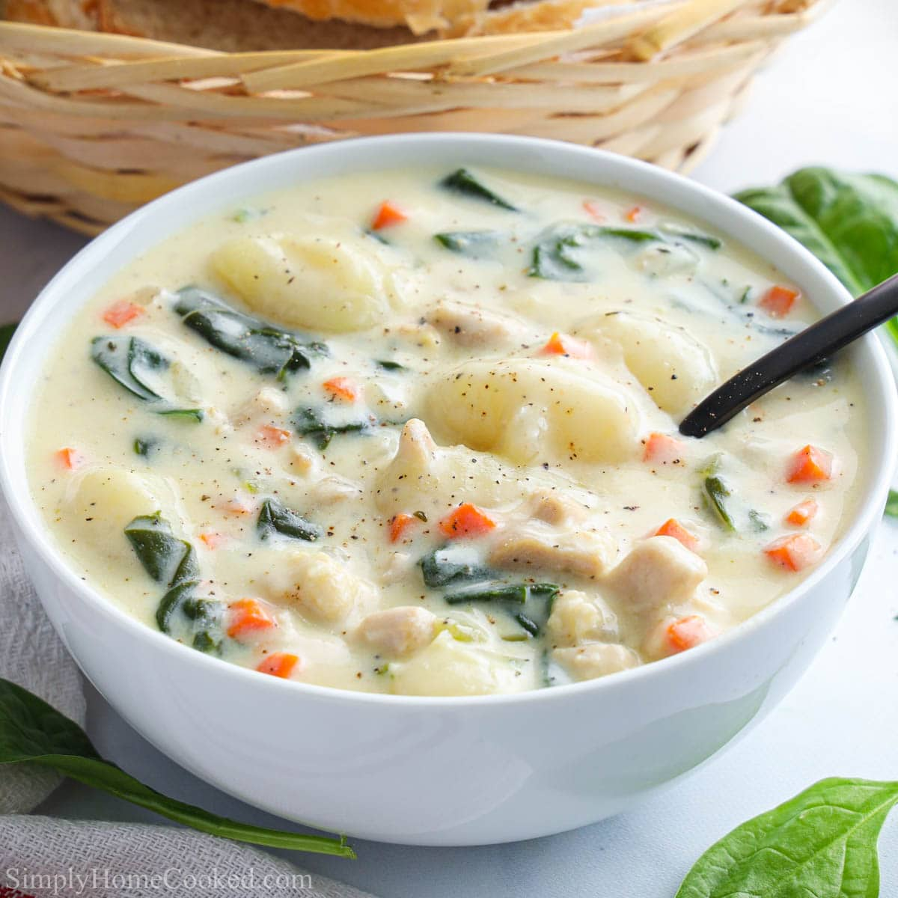

Chicken Gnocchi

This soup is a white, tasty soup that tastes ike gravy and tates good.
It contains chicken, potato gnocchi, celery, onion, cheese, spinach, and carrots.
Ingredients
- 1 Small onion, diced
- 3 stalks celery, diced
- 3 cloves garlic, minced
- 2 carrots, shredded
- 1 pound cooked chicken
- 4 cups chicken broth
- 1(16 ounce)package potato
- 1(6 ounce) bag baby spinach
- tablespoon cornstarch
- 2 cups half-and-half cream
- Salt and pepper(to taste)
Steps To make
- Heat oil in a large pot over medium heat. Cook carrots, celery, onion, and garlic in hot oil until onion is translucent, about 5 minutes. Stir in cubed chicken and chicken broth; bring to a simmer.
- Stir gnocchi into soup and cook until they begin to float, 3 to 4 minutes. Stir in spinach and cook until wilted, about 3 minutes.
- Whisk cornstarch into cold water in a measuring cup until smooth. Stir the cornstarch mixture and half-and-half into soup. Cook until soup thickens slightly, about 5 minutes. Season with salt and pepper.